getting_started.RmdsusR provides an R interface to the Slovak Statistical Office (SUSR) open data API, making it easier to:
This vignette guides you through a basic workflow: from installing susR to fetching data.
Installation If you haven’t already installed susR, you can do so from GitHub:
devtools::install_github("Arnold-Kakas/susR")Then load it:
There are two options how to retrieve available tables.
First is calling susr_domains() functions which reads
saved list of available tables, their names, domain and subdomains:
susr_domains_table <- susr_domains()
head(susr_domains_table)
#> # A tibble: 6 × 4
#> table_code table_name domain subdomain
#> <chr> <chr> <chr> <chr>
#> 1 as1001rs Population and attributes of age Indic… Indicato…
#> 2 as1002rs Participation of seniors in the labour market Indic… Indicato…
#> 3 as1003rs Net money income and expenditure of households by… Indic… Indicato…
#> 4 as1004rs Expenditure of households on selected goods and s… Indic… Indicato…
#> 5 as1005rs At-risk-of-poverty rate by selected age group and… Indic… Indicato…
#> 6 as1006rs Social and pension security Indic… Indicato…Second is to call the SUSR API:
susr_tables <- susr_tables()
head(susr_tables)
#> # A tibble: 6 × 6
#> class href table_code label update dimension_names
#> <chr> <chr> <chr> <chr> <chr> <chr>
#> 1 dataset https://data.statistics.sk/ap… as1001rs Popu… 2024-… as1001rs_rok:a…
#> 2 dataset https://data.statistics.sk/ap… as1002rs Part… 2024-… as1002rs_rok:a…
#> 3 dataset https://data.statistics.sk/ap… as1003rs Net … 2024-… as1003rs_rok:a…
#> 4 dataset https://data.statistics.sk/ap… as1004rs Expe… 2024-… as1004rs_rok:a…
#> 5 dataset https://data.statistics.sk/ap… as1005rs At-r… 2024-… as1005rs_rok:a…
#> 6 dataset https://data.statistics.sk/ap… as1006rs Soci… 2024-… as1006rs_rok:a…This returns a tibble with columns like table_code, href, dimension_names, label, and update.
If you only want certain domains or subdomains, you can do it by
passing one (or more) domains and/or subdomains from
susr_domains() result:
# Example: filter by domain = "Demographic and social statistics"
domain_tables <- susr_tables(domain = "Demographic and social statistics")
dim(domain_tables)
#> [1] 231 9
subdomain_tables <- susr_tables(domain = "Housing")
dim(subdomain_tables)
#> [1] 2 9
multiple_subdomain_tables <- susr_tables(domain = c("Housing", "Energy"))
dim(multiple_subdomain_tables)
#> [1] 12 9You can pass parameter long = TRUE in order to fetch
data in long format where each row contain only one dimension.
subdomain_tables_long <- susr_tables(domain = "Housing",
long = TRUE)
dim(subdomain_tables_long)
#> [1] 10 8You can see what valid dimension values by using
susr_dimension_values().
dims <- susr_dimension_values(table_code = "bv3001rr",
dimension_code = "bv3001rr_voda")
dims
#> # A tibble: 4 × 6
#> dimension_code dimension_label dimension_note element_index element_value
#> <chr> <chr> <chr> <int> <chr>
#> 1 bv3001rr_voda bv3001rr_voda Water supply 0 VODATOT
#> 2 bv3001rr_voda bv3001rr_voda Water supply 1 VODA01
#> 3 bv3001rr_voda bv3001rr_voda Water supply 2 VODA02
#> 4 bv3001rr_voda bv3001rr_voda Water supply 3 VODA03
#> # ℹ 1 more variable: element_label <chr>You can map this function to susr_tables() output in
long format.
library(dplyr)
#>
#> Attaching package: 'dplyr'
#> The following objects are masked from 'package:stats':
#>
#> filter, lag
#> The following objects are masked from 'package:base':
#>
#> intersect, setdiff, setequal, union
library(purrr)
library(tidyr)
# 1) Get all tables in the "Energy" domain, in long format
energy_long <- susr_tables(domain = "Energy", long = TRUE)
# Inspect the columns:
# - table_code
# - dimension_code
# - plus other metadata (domain, subdomain, label, href, etc.)
# 2) Map susr_dimension_values() across each row:
# We'll create a new list-column 'dim_info' that stores the dimension values
energy_long_dim <- energy_long |>
mutate(
dim_info = map2(table_code, dimension_code, ~ susr_dimension_values(.x, .y))
)
# Now `energy_long_dim$dim_info` is a list of tibbles/data frames (one for each dimension).
# Each entry holds columns like:
# dimension_code, dimension_label, dimension_note, element_code, element_label, etc.
# 3) (Optional) Unnest into a single combined data frame
# If you'd like a tall data frame where each row is a unique dimension element:
full_dim_info <- energy_long_dim |>
unnest(cols = dim_info, names_sep = "dim_")
# `full_dim_info` now contains columns:
# class, href, table_code, label, update, dimension_code,
# (optionally) domain/subdomain,
# and the un-nested dimension columns from susr_dimension_values().
head(full_dim_info)
#> # A tibble: 6 × 14
#> class href table_code label update dimension_code domain subdomain
#> <chr> <chr> <chr> <chr> <chr> <chr> <chr> <chr>
#> 1 dataset https://data.… en1001ms Sour… 2024-… en1001ms_rok Multi… Energy
#> 2 dataset https://data.… en1001ms Sour… 2024-… en1001ms_rok Multi… Energy
#> 3 dataset https://data.… en1001ms Sour… 2024-… en1001ms_rok Multi… Energy
#> 4 dataset https://data.… en1001ms Sour… 2024-… en1001ms_rok Multi… Energy
#> 5 dataset https://data.… en1001ms Sour… 2024-… en1001ms_rok Multi… Energy
#> 6 dataset https://data.… en1001ms Sour… 2024-… en1001ms_rok Multi… Energy
#> # ℹ 6 more variables: dim_infodim_dimension_code <chr>,
#> # dim_infodim_dimension_label <chr>, dim_infodim_dimension_note <chr>,
#> # dim_infodim_element_index <int>, dim_infodim_element_value <chr>,
#> # dim_infodim_element_label <chr>Once you know the table code and dimension segments, use
fetch_susr_data(). If you want to fetch data from multiple
tables multiple pairs of table codes and dimension lists:
params <- list(
"np3106rr",
list("SK021", c("2016","2017","2018"), "E_PRIEM_HR_MZDA", "all"),
"as1001rs",
list("all", "all", "all")
)
multi_res <- fetch_susr_data(params)
names(multi_res)
#> [1] "np3106rr" "as1001rs"
class(multi_res$np3106rr)
#> [1] "tbl_df" "tbl" "data.frame"Each element in multi_res is a tibble for given table code.
Once you have the data, use dplyr and ggplot2 (or anything else) to analyze:
library(ggplot2)
p <- multi_res$as1001rs |>
filter(as1001rs_ukaz == "Pre-productive population (aged 0 -14 years)",
as1001rs_poh == "Total") |>
ggplot() +
geom_line(aes(x = as1001rs_rok, y = value, group = 1)) +
labs(title = "Pre-productive population (aged 0 -14 years)",
x = "Year",
y = NULL) +
theme_minimal()
p